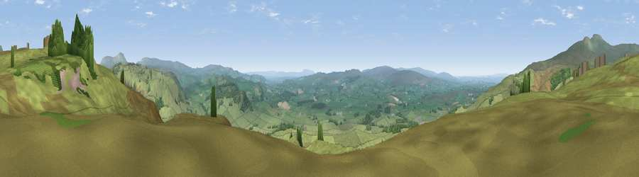

Viewpoint near Austwick
#4309 in England · top 7% of its area beats it · near AustwickWhere it is
The exact computed spot (SD 76125 70275). Click the marker for map links.
The view, rendered

A 360° render of this exact spot computed from the terrain model, tree cover and land cover — summer colours, afternoon light, calibrated against photographs of famous viewpoints. Real trees, hedges and buildings will differ in detail.
The panorama
Grey silhouette: terrain skyline in each direction (720 bearings, Earth curvature and refraction included). Dashed green: skyline with trees (+15 m) and buildings (+8 m) as obstacles. Blue strip: how far the ground is visible on each bearing.
Where the view opens
Wedge length = distance to the farthest visible ground on that bearing (vegetation-aware). Rings at 10, 25 and 50 km.
What fills the view
86% grassland · 13% woodland
Angular shares of the visible panorama (visual magnitude), not map area. Landscape diversity 0.19 (0–1 Shannon).
Key numbers
More beautiful places nearby
The staircase of upgrades: each row has a higher view potential than everything closer. Driving times are estimates from straight-line distance, calibrated against real road routing — check an actual route before setting out.
| Place | Direction | Drive | Score |
|---|---|---|---|
| Little Ingleborough | NNW · 4 km | ~9 min | 78.8 |
| Viewpoint near Ingleton | NNW · 5 km | ~11 min | 79.5 |
| Whernside | N · 12 km | ~22 min | 79.9 |
| Warton Crag | W · 27 km | ~43 min | 83.2 |
| Viewpoint near Grange-over-Sands | WNW · 37 km | ~56 min | 83.4 |
| Viewpoint near Cartmel | WNW · 41 km | ~61 min | 87.0 |
| Viewpoint near Finsthwaite | WNW · 41 km | ~61 min | 90.3 |
| The Knoll | S · 383 km | ~369 min | 91.0 |
54.12777, -2.36683 · source: screening · position refined by local search. Computed location — check access rights before visiting.